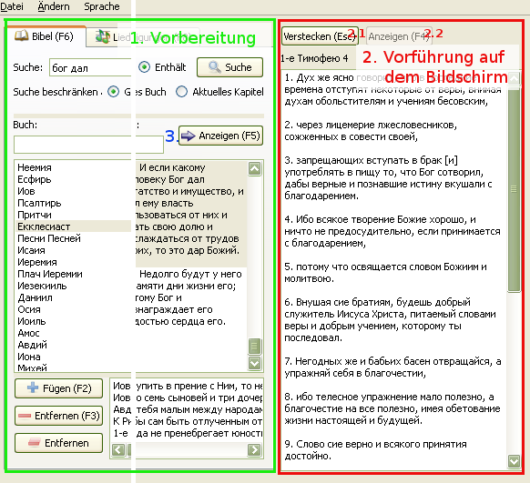

2.1 Vorführung auf dem Bildschirm

softProjector besteht hauptsächlich aus drei Teilen: Vorbereitung, Vorführung auf dem Bildschirm und
"Anzeigen" -Knopf.
1. Vorbereitung:
In diesem Teil befinden sich Texte aus der Bibel, Lieder und alles das, was auf dem Bildschirm angezeigt werden soll.
Alles das, was in diesem Teil vorbereitet wird, hat keinen Einfluss auf das, was angezeigt werden soll, solange der
"Anzeigen" -Knopf nicht gedrückt wird.
2. Vorführung auf dem Bildschirm:
Nachdem der "Anzeigen" -Knopf gedrückt wurde, erscheinen gewählte Bibeltext oder Lied in der Anzeige-Liste.
Beim drücken "Zeigen" kann man mit der Maus aus der Anzeige-Liste wählen.
Während dessen wird der gewählte Text auf dem Bildschirm angezeigt. Beim Doppelklick
auf das Anzeige-Fenster, wird der "Zeigen" -Knopf aktiviert und sendet
den gewählten Text auf den Bildschirm.
Beim drücken des "Verstecken" -Knopfes, wird der "Zeigen" -Knopf deaktiviert und die ganze Information verschwindet vom Bildschirm. Während dessen wird das aktive Bild ins passive gewechselt.
"Zeigen" -Knopf wird automatisch aktiviert beim drücken des "Anzeigen" -Knopfes. Beim drücken des "Zeigen" -Knopfes wird der "Verstecken" -Knopf deaktiviert. Während dessen wird das passive Bild ins aktive gewechselt, aber der gewählte Text wird in in die Liste eingetragen.
3. "Anzeigen" -Knopf:
"Anzeigen" -Knopf erfüllt die gleiche Funktion in allen Reitern, d.h. sendet die ausgewählten
Bibelverse/Lieder/Texte usw. auf den Bildschirm. Beim drücken des Knopfes wird die Anzeige-Liste
mit den gewählten Texten gefüllt, und der "Zeigen"
-Knopf wird aktiviert. Auf dem Bildschirm erscheint der gewählte Text.